Multi Cloud Transfer (Advanced!) 🔥
1.Setup and Start using Rclone on Google Colab and Create/Edit/View and delete your Rclone config file and keep them always with you using this! No matters which device you are on! Use Anywhere and Anytime and perform all Rclone task and immediately save it!
2.Now I have implemented the Multi Cloud Transfer tool! it means you can easily transfer your all account data to any Cloud service which you like! And since it will work on Google Server, So it will be lightning fast⚡and will not consume your Internet or System Resources.😉
3.This Project comes with the ability to pack or extract of Files or Folder in varity of formats with or without Password Protection while moving the data from One Cloud to another Cloud.
4.It comes with various amazing Add-ons which will make your task or work more simple. It combines the power of Rclone with other engines which make a combination that can do your work by taking less efforts and giving more output.
🆕What's New!🆕
v3.0.5 (Amazing Add-ons, Direct Download links, Torrents and bug fixes!)
1.Now download direct download links with various bulk download options to any cloud!😎
2.Added YouTube Videos/Playlist download including various site support using yt-dlp!😘
3.Multiple Torrent download support using Magnet link or torrent file directly to any cloud.🥰
4.Fixed wrong token error in Source & Destination path.😅
5.Addressed bug not allowing custom name while packing data.🥲
6.Now bypass and mirror GDTOT links directly.🤗
7.Packer & Extractor is now in STABLE.😉
8.Now run aria2 and yt-dlp commands in Colab.😍
v2.2.8 (More Customizations & Packing and Extraction Support)
1.Saving Customization for Rclone Configuration.😉
2.Packing & Extracting Files/Folder between Cloud Transfer.😆
3.Solved Auto-Unmounting Error for Google Drive.🪄
4.Error 4 Unzip tools not found Eradicated.⚰️
5.Added Upload & Use already made Rclone config file option.💾
v2.2.7 (Service Accounts support and warning time.)
1.Added Service Accounts support.🪀
2.Warning time added in Delete section to prevent accidental data loss.⚠️
3.More Purge options are added!🧼
4.New Transfer Modes are added!🔮
5.Now use Different Rclone Flavours!😋
v2.2.6 (More Transfer Methods and Purge options!)
1.Added more Transfer modes as rclone.🚅
2.Now delete or purge your data.🗑️
3.Fixed duplicates rclone.conf Errors.
⛔ NOTICE
1.The Project is now updated and everything is optimized for new changes made by Rclone v1.58.0 written in 2nd point.
2.In Latest Rclone Version v1.58.0, they made some changes in Auto-Config. Don't worry I am aware of that and till that you can either follow the New Steps or if you are making config file for Google Drive then you can provide your CLIENT ID and CLIENT SECRET to Work around that situation! I will update you in my Update Channel ,once I find some alternative to help you out in that Step.
3.For auto-config always choose No(n) because we are going to run the Rclone not on our own local device! Otherwise login will not work.
📝 Introduction
This Project makes it easy and possible to Perform every Rclone Task on Google Colaborately and Store your progress on the cloud and continue it where you left it anytime and anywhere! This Project comes with In-Build support to perform basic task like Creating/Editing/Viewing and Deleteing and also Downloading your Rclone Config file which is needed by almost all Rclone User to perform task! To execute any rclone command you just need to type "!rclone" (After installing Required Setup Files) before any command like "!rclone config" where config is the Command name!
🔌Before you Start!
Please Connect your Google Account, So that Rclone can easily save its progress automatically.

If you want to use your own Rclone config file or the progress saved in your Google Drive in My Drive! Then run the following Code as shown in the image
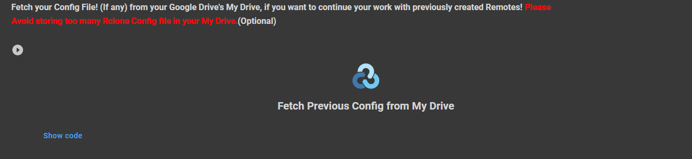Run the Time Out Preventer to prevent Google Colab from getting timeout before your Transfer got Completed.
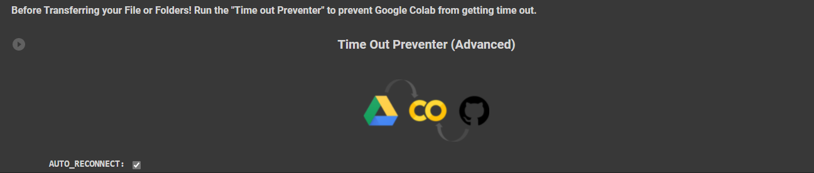You can easily use the Service Accounts (if you want to) using the given code, Please read "Using Service Accounts" Section to learn how to.
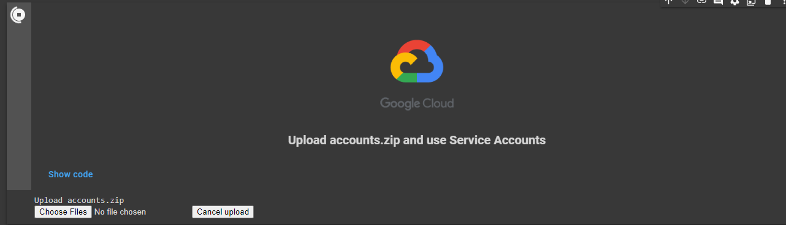You can easily delete your Files/Folder/Directory from the given code
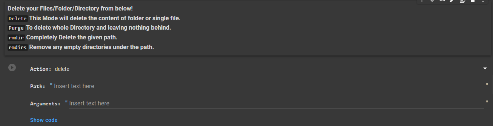This Project gives you the ability to pack or extract files or folders between any cloud with large verity of format support.
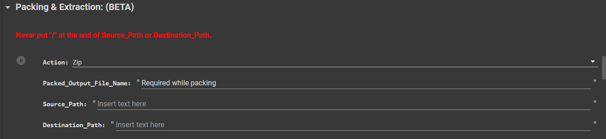⚙️ How to use?
1.First Open the Code on Google Colab: Open Code
2.Now,Before performing any task, Download & Setup Rclone by running the code as shown in the Image. You can also choose different flavours of Rclone which is described as follows:
Stable: For best Stability.
Beta: For Earlier testing of newly released features in Rclone.
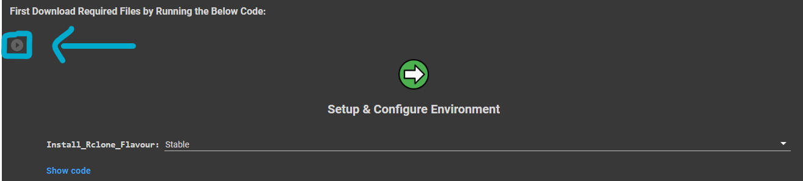3.To Create/Edit/Delete/View comfig file/remote just run the code as shown in the Image. You can also save your Rclone config file for using it in future without doing same thing repeatedly.
Rclone config Saving options:
1.Upload_Config_File: Upload your already made Rclone config file to use it.
2.Save_Config_MyDrive: To save created Rclone Config File in Google Drive's My Drive.
3.Download_Config: Download Created Rclone Config file in your Device.
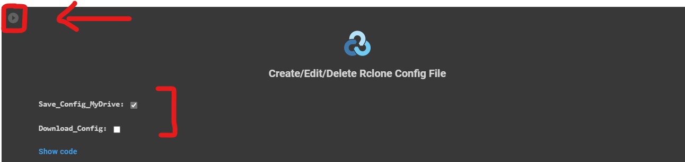4.After Running the Code! Checkout the available options (shown in image) and type an alphabet and hit Enter key to continue, but if input filed is not visible then just click on the blinking line.
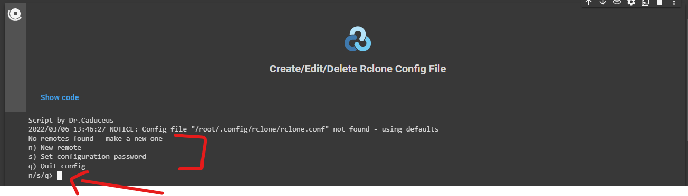5.Type n and hit Enter to create a new Config file or Remote and give name, So that you can identify it in future
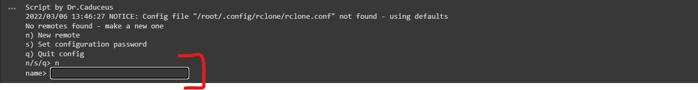6.Now after Entering the name! You have to choose the cloud for which you have to make config file or remote (by typing its list number), like if you need to make config file or remote of Google Drive then type number "16" and hit Enter
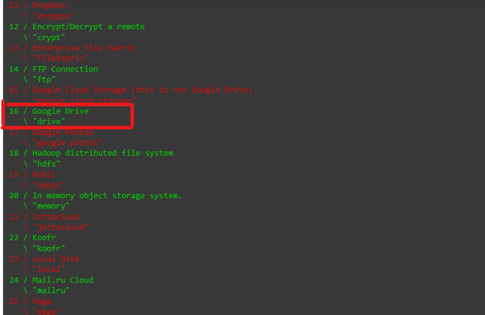7.If you don't know about Client ID and Client Secret then just hit Enter without entering anything! Otherwise this can be used to bypass login into your Google Account
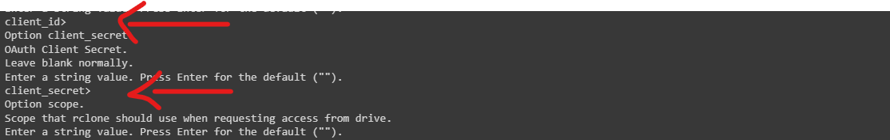8.After that, It will ask you to grant which level of access to your Rclone config file, to choose it just type and hit enter the list number! I recommend to use number '1' which is for full access.
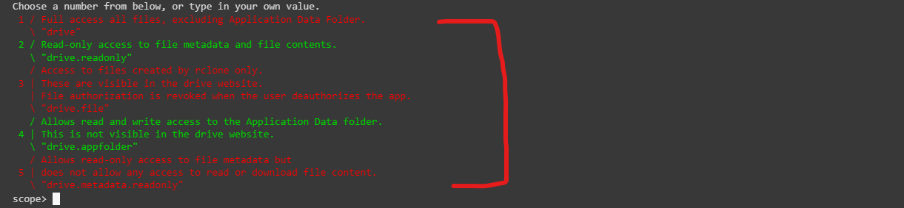9.If you want to use "Computers" folder than you can provide its root_folder_id otherwise just hit Enter to ignore
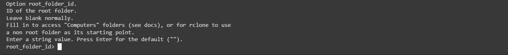10.Again! If you want to use Service Accounts then you can fill the shown field otherwise leave it and hit Enter!
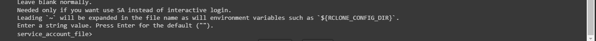11.Also, for doing advanced configuration you can type y or just hit Enter to ignore it.
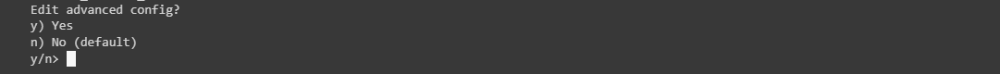12.This is a important step! For Auto-Config write 'n' and hit Enter because here we are using a Remote Machine which is not our Device! So always choose 'n' otherwise login will not work.
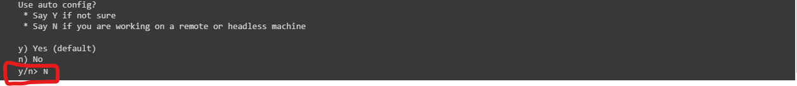
13.Now Rclone will ask you to type something like "rclone authorize "drive" "XXXXXXXXXXX" in your own Computer or Mobile Phone! Please read the following steps carefully!
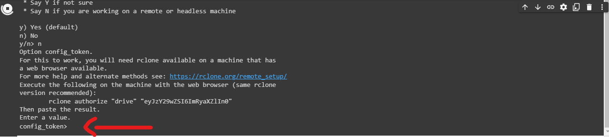
For 📲Mobile Phones:
1.First Download Termux App in your Phone: Android | iOS
2.Now Run the Following Commands one by one in it!
1.pkg install rclone
2.Command given by Rclone in STEP 13!
3.After it! Rclone will open Browser for login into your Account!
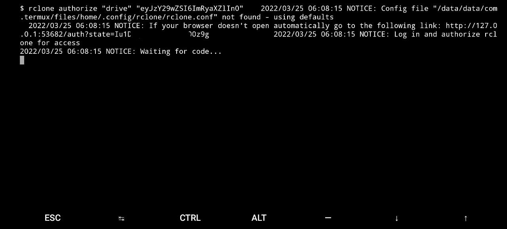4.Once you Successfully login! Return back to Termux App and copy the code which will apper there and paste it into the Google Colab to continue!
For 🖥️PC:
1.Download Rclone, as per the Operating-System in your PC: Download Now
For Windows:
2.After Downloading Rclone zip for Windows! Extract it and open the Folder as shown in the Image.
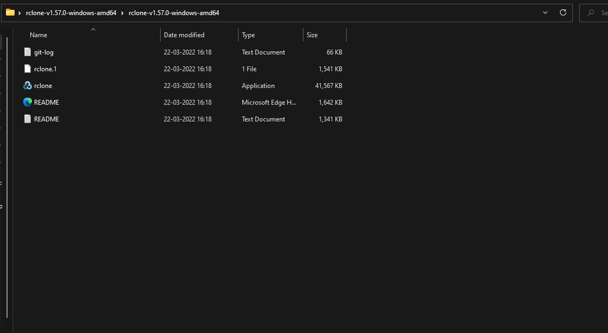3.Now type CMD in the Address bar and hit Enter to configure CMD in that folder and to use Rclone.
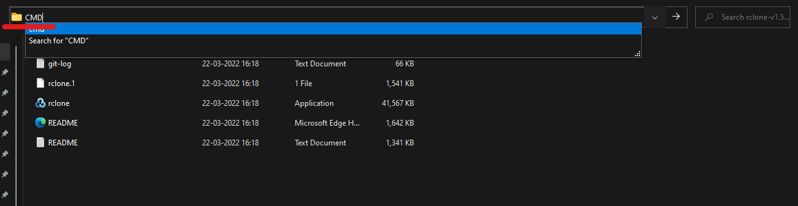4.It will open CMD, Now Enter the command given by Rclone in the STEP 13 written above. It will open the Browser, so just login into your account return back to CMD Window
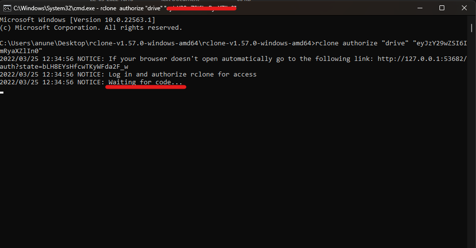5.Once you login successfully! A Code will be visible. Just copy the code and paste it in Google Colab to continue.
For Linux:
Read Here: Rclone on Linux
For MacOS:
Read Here: Rclone on MacOS
14.Now, it will ask you if you want to use Shared Drive or not ? y for Yes and n for No.
15.If you want to use Shared Drive then it will ask you to choose the list number of Shared Drive from the list shown (of available Shared Drive in your Account.)
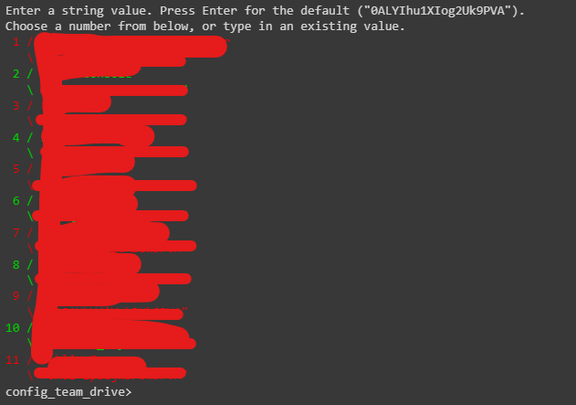16.Finally! After above steps, it will show you the final code of rclone config file, you can copy paste it in any Text Editor and after that type 'y' and hit Enter to confirm and then type 'q' tp quite the configuration of file.
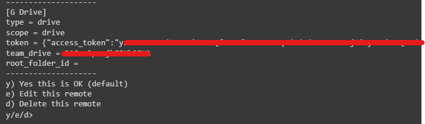 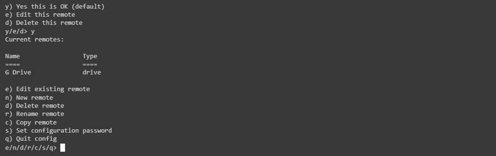17.After Typing q and hitting Enter! The program will automatically save the rclone.conf file in your My Drive.
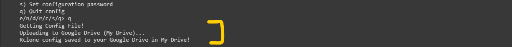18.You can execute or run any Rclone command in this project! Just click on the Drop-down arrow of "Advanced Task" and that sit! Enjoy
📑Creating Config File for More Clouds
You can learn creating config file for all Cloud Services: Learn Here
🪝Multi Cloud Transfer
Lets move Data from any cloud to any cloud as you want! Since we are using Colab, So it will not consume your Internet or System Resource.
1.Before we procced! I recommend to either create or fetch your Rclone Config file to Google Colab using above two methods! Creating and fetching will automatically place the file in correct location!
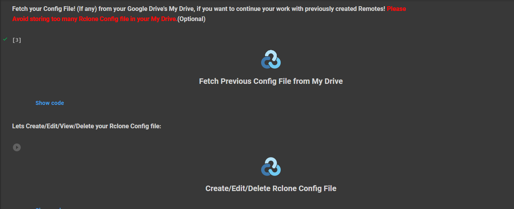2.Once you done creating or fetching the config file! Just run the Code named "Connect to Cloud Accounts" and it will automatically detect your config file and will show you dropdown list to mount multiple remotes as shown in the image. Now select remoted and click mount to connect to those remotes between which you have to transfer your Data.
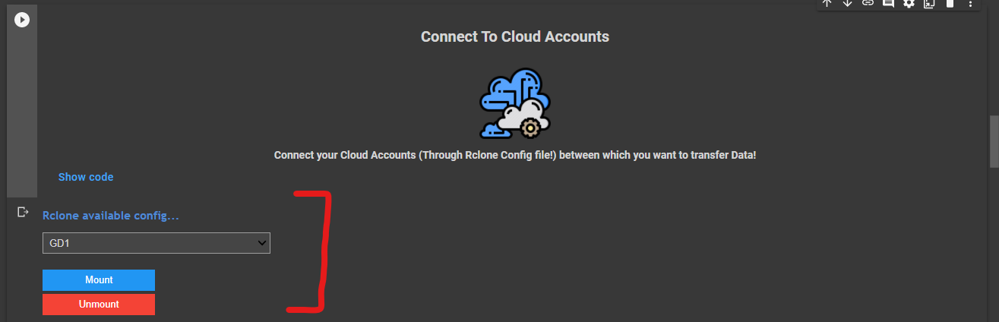3.After mounting those remotes or Cloud Accounts, Now click on the File icon as shown in the image and then you will see two folder named "drives" open the second folder named "drives" and you will see the names of Remotes or Cloud Account which you mounted previously!
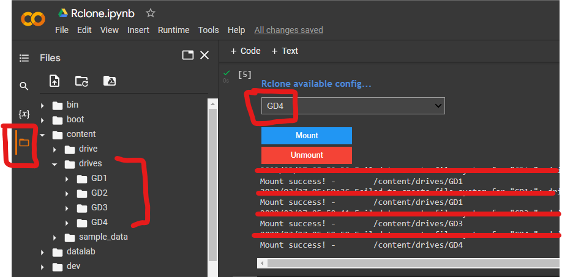4.Now Simply open that Folder and copy the file or folder path which needs to be copied and then right click on the file or folder and select "Copy Path" option from the list
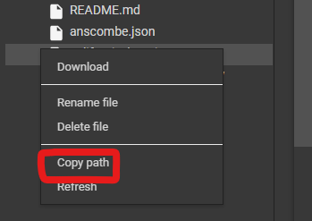5.After that! Paste the path of file or folder in "Source" field and again go to File Icon-->drives and open the Cloud Account into which you want to transfer files/folders and copy its path! You can either directly copy the path of Cloud Account or of any folder inside it and paste the path in "destination" field.
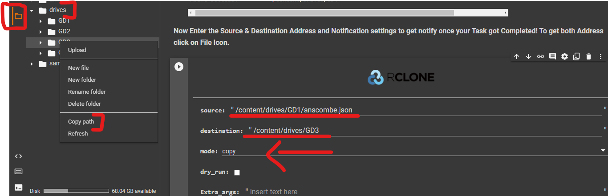6.Choose the Transfer mode trough which you want to transfer your Data! Please refer to "🚅Modes of Transfer" below to learn about all of them.
7.If you want to get notified! when your transfer got completed then tick the Email_notification option and provide Gmail Email ID as well as its password and the Receiver Email ID on which you want to receive the notification! (optional)
Email_notification: Select this option to enable following options.
logs: Check this option to also get log in Mail.
emailID: Enter your Gmail ID.
password: Enter Password of given Gmail ID.
Receiver_ID: The Email ID on which you want to receive the Notification.
8.Dry Run option is just to check the Source as well as destination path without copying anything.(Optional)
9.Finally! Run the code by pressing Play button to start transferring. Enjoy!🙃
🪀Using Service Accounts
The service accounts can be used to bypass the 750Gb/day upload limit set by google in Google Drive. It means that you can use them to upload more than 750Gb per day, duplicate hundreds of files...Each service account has a 750Gb upload limit per day. You can create up to 100 service account per google cloud project. So, with only one project you can upload/duplicate up to 75Tb a day!
1.Don't have Service Accounts? Create Here
2.After creating! make the zip of "accounts" folder which have 100 Json files and keep its name as "accounts.zip".
3.Now back to Google Colab screen and run the code as shown in the Image and click "Choose file" and select the zip file you just created!
4.After it! Click the file icon, then open "accounts" folder and right click on anyone json file and select "Copy path".

5.Run the "Create/Edit/Delete Rclone Config File" and paste the path in "service_account_file" during createing remote for Google Drive.
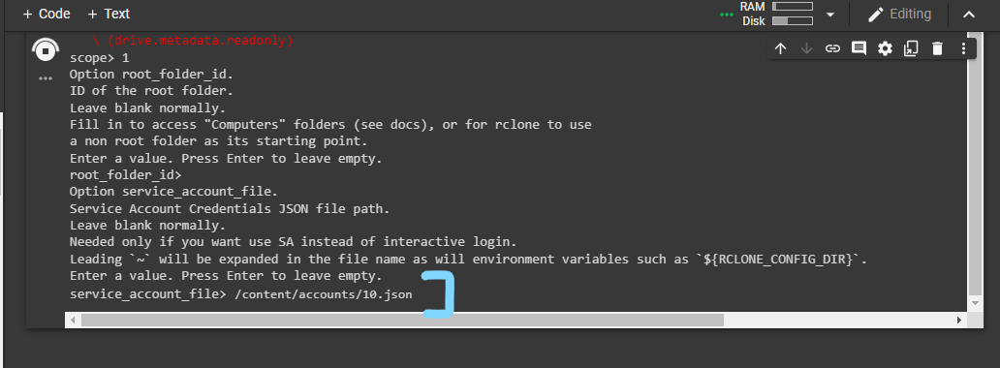
🪄Special Add-ons
This project comes with various amazing Add-ons which will make your task or work more simple. It combines the power of Rclone with other engines which make a combination that can do your work by taking less efforts and giving more output.

Direct Download Links:
This feature enables you to download files or data from any direct download to any cloud. It uses Aria engine to deliver to best and fastest performance possible. You can also download two or more links at same time with this.
Just put your direct download links in Source field and then enter the Destination path to where you want to download data. You can enter multiple Direct Download links in the source field by seperating them using space between each link in the following format:
Link1 Link2
Download Links from txt file:
Download Links from txt file feature enables you download all links written in a txt file. This feature is useful when you have too many links and it will take too much time seperate each link with space.
You just have to upload the txt file contaning the download links to any cloud which you connected then have to provide its path in Source field and Destination path in Destination field to where you want to download the data. I will recommend to arrange the links in txt files in the below given format:
Link1
Link2
Link3
YouTube videos/playlist
This feature gives you the flexibility to download YouTube Videos or Playlist and videos from other supported sites directly to any Cloud. It uses yt-dlp which downloads everything is maximum quality. You can download two or more videos which are not in same playlist or even two seperate playlist at once. Refer to yt-dlp documentation for more information.
Just provide the YouTube link of video or playlist or link to videos located on other website (Non-DRM Protected) in Source field and Destination path in Destination field to where you want to download it. You can seperate the link of videos or playlist by providing space between each in following format:
Video Link1 Video Link2
Playlist Link1 Playlist Link2
Video Link1 Playlist Link1
Magnet Links:
Magnet Links feature allow you to download torrent using magnet link directly into any cloud with high speed. It uses LibTorrent which is a lightweight powerful BitTorrent client. You can download multiple magnet links at once, you don't have to write magnet link in Source Field.
Just provide the Destination path in Destination field where you have to download the torrent and run the code. You don't have to put magnet link in Source field because when you run the code then you will see input box where you have to put magnet link, you can provide as many magnet link as you can but only 1 magnet link per input box and hit enter! once you done adding magnet links, just type Exit and it will start downloading it.

Torrent Files:
This feature gives you ability to download torrent from .torrent files, you can provide as many torrent files as much you want. It also uses LibTorrent to deliver fast download speed.
You have to provide destination path to where you want to download torrent data and torrent file through "Choose file" option. Once you provided torrent file you want to download then click "Cancel Upload" then it will start downloading torrent for you.

Mirror GDTOT Links
This feature automatically bypass and clone the GDTOT Links directly into your Google Drive's My Drive, So that you can easily move the file to any cloud. You just have to provide your "crypt" cookie of GDTOT to use this feature.
To get Crypt cookie of your GDTOT account, just login on GDTOT and then open Developer tools->Applications. Then you have to provide GDTOT link in Source field and leave destination path empty.

📦Packing & Extracting Files/Folder
This Project comes with the ability to pack or extract of Files or Folder in varity of formats with or without Password Protection while moving the data from One Cloud to another Cloud. What you need is just Source Path which needs to be packed or extracted and Destination Path where you need the final result, so lets learn how to use this feature.😆
1.First connect the Cloud Accounts between which you need to transfer the packed or extracted data. Please read STEP 2 of "🪝Multi Cloud Transfer" section to learn how to do that!
2.Now Get the both Source Path & Destination Path, Refer to STEP 3 of "🪝Multi Cloud Transfer" section to learn how to get both Path.
3.After it! Choose the action which needs to be done with the Source Path and then enter following Details:
1.Packed_Output_File_Name: Enter the name of Packed or Zipped file if packing anything.
2.Source_Path: The Path of Data which needs to be processed.
3.Destination_Path: The Path on which you want the final output.
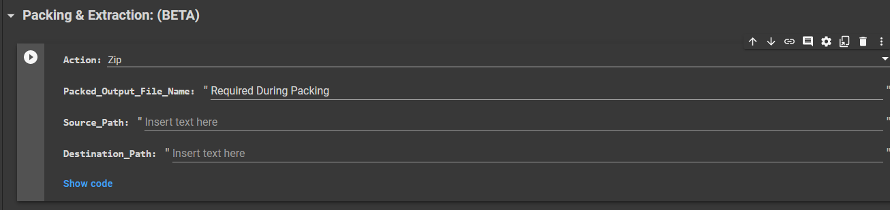4.Then Run the code to start your given task. Finally Enjoy!😎
❗This Tool is under Beta and not completely tested yet, but it is definitely safe to use without any Data corruption! So there maybe some condition when it can produce some Error, so please Report them to me.❗
🚅Modes of Transfer
As this project use Rclone as a base! and Rclone support multiple flags to help you move or clean your Data, in this Project flags are known as Modes. Here is the list of the Modes that this Project supports:
1.Copy: Copy files from source to dest, skipping identical files.
2.Copyto: This can be used to upload single files to other than their current name.
3.CopyURL: Download a URL's content and copy it to the destination without saving it in temporary storage.
4.Move: Moves the contents of the source directory to the destination directory.
5.Moveto: If source:path is a file or directory then it moves it to a file or directory named dest:path.
6.Check: Checks the files in the source and destination match. It compares sizes and hashes (MD5 or SHA1) and logs a report of files that don't match. It doesn't alter the source or destination.
7.Sync: Sync the source to the destination, changing the destination only. Doesn't transfer files that are identical on source and destination, testing by size and modification time or MD5SUM. Destination is updated to match source, including deleting files if necessary (except duplicate objects, see below).
8.Bisync: Bisync provides a bidirectional cloud sync solution in rclone. It retains the Path1 and Path2 filesystem listings from the prior run. On each successive run it will:
9.Cat: Rclone cat sends any files to standard output.
10.CleanUp: Clean up the remote if possible. Empty the trash or delete old file versions. Not supported by all remotes.
11.ls: List all the objects in the path with size and path.
12.lsd: List all directories/containers/buckets in the path.
13.lsl: List all the objects in the path with size, modification time and path.
14.md5sum: Produce an md5sum file for all the objects in the path.
15.sha1sum: Produce a sha1sum file for all the objects in the path.
16.size: Return the total size and number of objects in path.
17.genautocomplete: Output shell completion scripts for rclone.
18.gendocs: Output markdown docs for rclone to the directory supplied.
19.obscure: Obscure password for use in the rclone.conf.
20.tree: List the contents of the remote in a tree like fashion.
Following Modes can easily cause Data Loss:
1.Delete: Remove the files in path.
2.Purge: Will delete whole Directory and leaving nothing behind.
3.rmdir: Completely Delete the given path.
4.rmdirs: Remove any empty directories under the path.
🎯Points to be Remembered
1.Always choose No (n) for Auto-Config because we are not going to use Rclone on our Local Device/Machine otherwise login will not work!
2.Don't forget to type '!' before executing any custom Rclone Command.
3.For Safety! Rclone will always save progress in your My Drive! Not in any of your Shared Drive.
4.Use the Dry Run option to check both Source and Destination path without copying anything.
5.You can either choose the path of Cloud Account folder or anyother folder inside it
Supported Command List
Show List
🤔Why use this?
1.Rclone is really a very powerful command line tool! but some users are really not comfortable with Command line and hence it become defficult to use this type of useful tools, So this Project provides a very interactive User Interface (UI) to operate it with less inputs.
2.Rclone creates "rclone.conf" file, which is the most important thing to make rclone useful. But when you change your device, then you have to create a new rclone.conf file. But this Project saves your rclone.conf file to Google Drive and you can use the same file repeatedly, what you just need is your Google Account and nothing.
3.Heavy flexibility: You can use this project anytime & anywhere because it is totally cloud based, that means if you are moving files in your PC and want to check its progress in your phone then you just have to login on Google Colab in your Phone.
🔐 Safe or Not? ✅
1.Don't Worry! No data will be shared with anyone, if you use the Original code.🔒
2.This code do not share even a single piece of data to any third party source and not create any log of that!🔑
3.Do not trust any other copy of this Code.📚
⛑Contact Us!
Join our Update Channel at Telegram: Join Now!
Directly Contact the Developer using Telegram @HelpAutomatted_Bot
❤️Credits & Thanks
Dr.Caduceus: For making this Project and Guide.
Rclone: The Backbone of this Powerful Project.